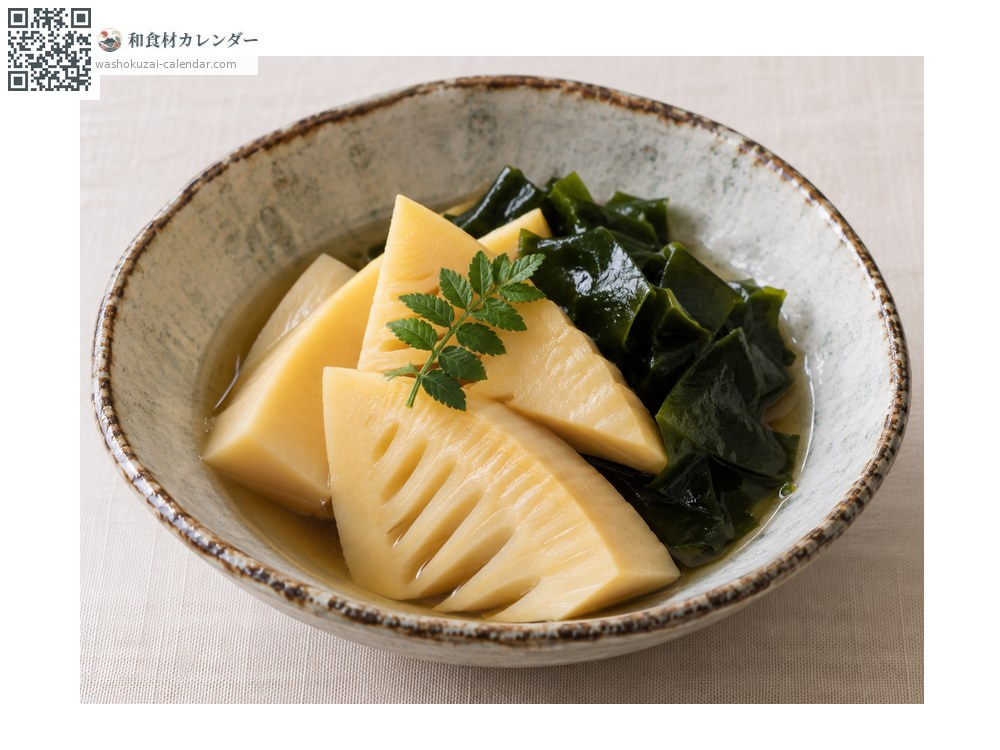
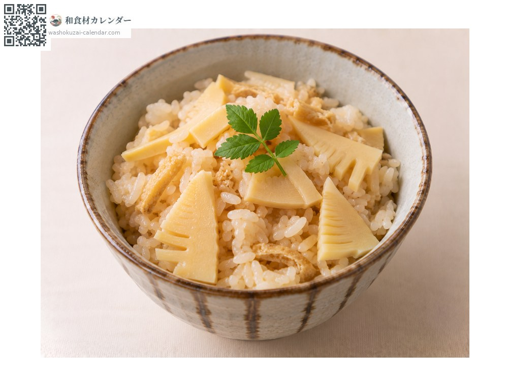
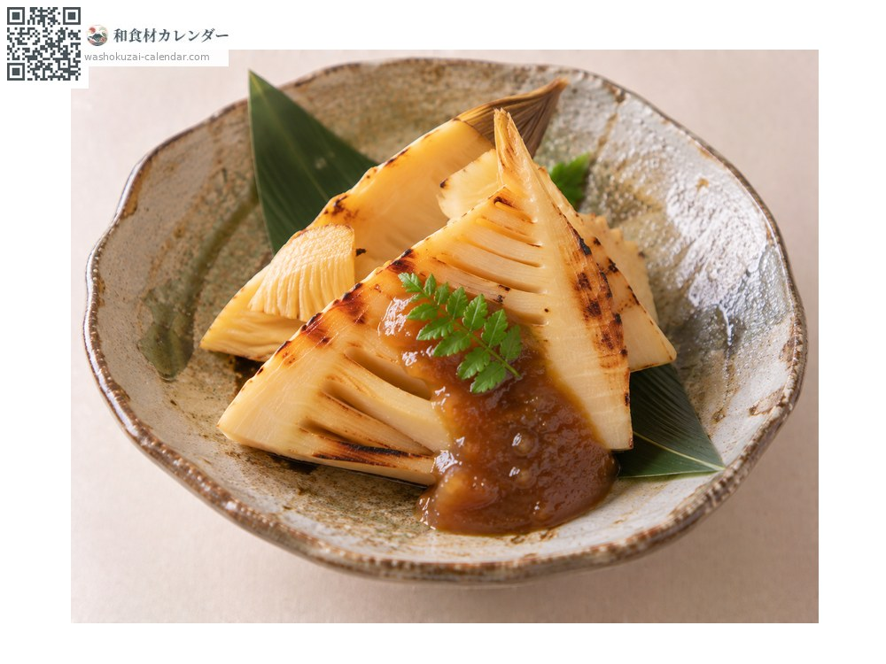

野菜
タケノコ
たけのこ
別名・別表記筍、竹の子、takenoko
旬は3月・4月・5月

旬の時期
1月
2月
3月
4月
5月
6月
7月
8月
9月
10月
11月
12月
旬出回り
調理法

若竹煮
わかめと炊き合わせる春の定番。出汁の香りを活かして薄味に。

たけのこご飯
穂先は薄切り、根元は角切りにして食感の違いを出す。

焼きたけのこ
掘りたてなら皮ごと焼いて木の芽味噌で。えぐみが少ない。
選び方
皮が薄茶で湿り気があり、根元のイボが少なく低いもの。穂先が緑がかると育ちすぎでえぐみが強い。
保存方法
掘った瞬間からえぐみが増すので、その日のうちに米ぬかと唐辛子で下茹でを。茹でた後は水に浸して冷蔵で4〜5日。
主な産地
豆知識
京都・乙訓の白子たけのこは、藁を敷いて土を盛る「土入れ」で育てられ、白く柔らかい。